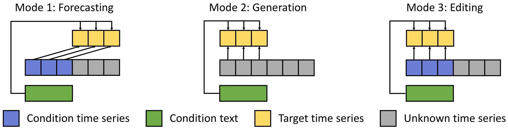
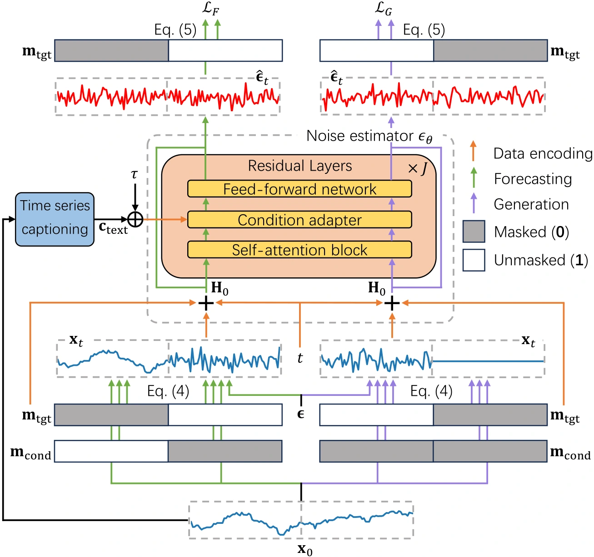
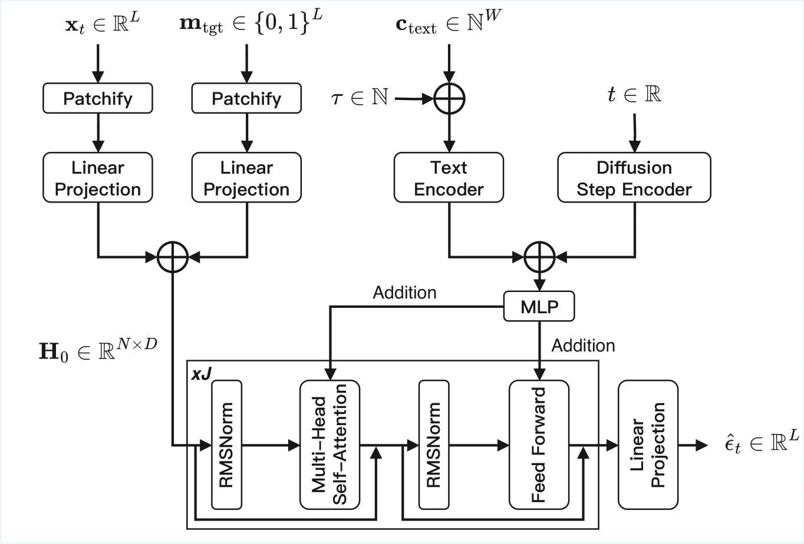
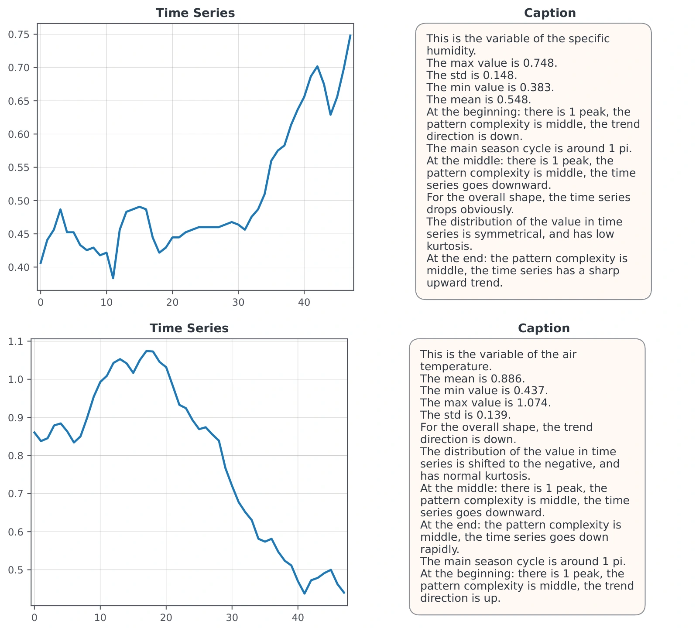
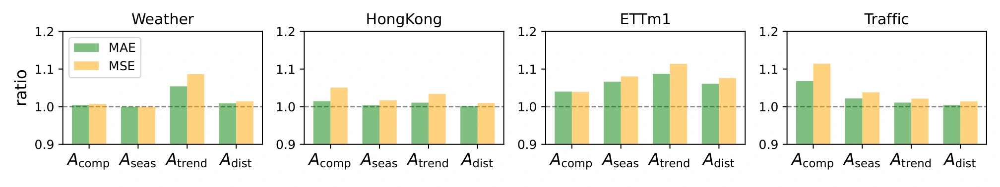
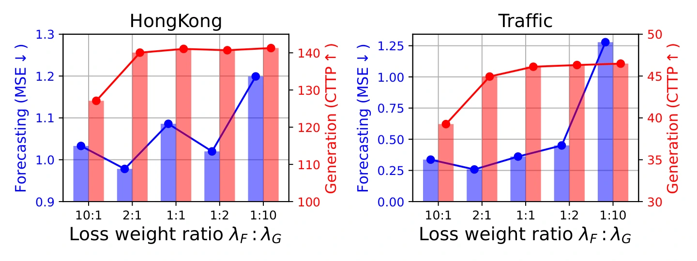
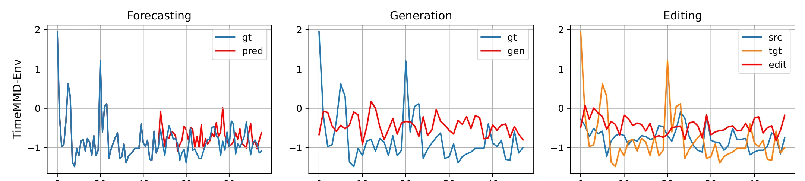

01
Forecasting
History + text → future
ObservedPredicted
One model. Three ways to shape time series.
Forecast the future, generate from language, and edit with intent.
1 ShanghaiTech University / 2 Meta † Corresponding author
History + text → future
Text → a new sequence
Source + new text → revised sequence
Bring numerical patterns and textual meaning into the same modeling framework.
Modeling multimodal time series has emerged as an important research direction, aiming to incorporate auxiliary modalities such as textual descriptions to enhance temporal understanding. However, existing methods often treat external modalities as supplementary features, limiting their applicability to specific tasks and resulting in high costs in terms of design, training, and maintenance. In this paper, we propose GenTS, a unified generative framework for multimodal time series analysis that integrates multiple downstream tasks within a single model. GenTS is jointly trained for text-conditioned time series generation and multimodal forecasting, enabling effective modeling of the joint distribution between time series and external modalities. This unified formulation supports diverse applications, including conditional generation, forecasting, and time series editing. Moreover, by incorporating efficient time series captioning, GenTS alleviates the challenge of multimodal data scarcity. Extensive experiments on diverse real-world datasets demonstrate the effectiveness and generality of our approach across multiple tasks.
Forecasting, generation, and editing become masked-conditional generation with the same input–output interface.
Fine-grained text connects time series patterns to controllable generation and multimodal forecasting.
Domain-agnostic statistical and morphological attributes provide aligned text, even for unimodal datasets.
Change the conditions and masks.
Keep the model and training pipeline.


Extract statistical and morphological attributes with tsfresh. Convert them into aligned descriptions using varied templates; combine with real text when available.
Condition and target masks distinguish observed, generated, and unknown segments. Task tokens specify forecasting or generation.
Jointly optimize forecasting and generation. At inference, editing starts from a perturbed source sequence and denoises under new text, without additional training.
ℒ = λF ℒF + λG ℒG
Forecasting + generation · default weight ratio 2 : 1

Six datasets, from environment and weather to energy, exchange rates, and traffic.
datasets with best J-FTSD
and CTTP among compared methods
datasets with best RaTS
among compared methods
lower MSE than the best baseline
0.139 vs. 0.169 (IATSF)
Forecasting errors averaged across three prediction horizons. Lower MAE and MSE are better.
| Method | TimeMMD-Env | Weather | HongKong | ETTm1 | Exchange | Traffic | ||||||
|---|---|---|---|---|---|---|---|---|---|---|---|---|
| MAE ↓ | MSE ↓ | MAE ↓ | MSE ↓ | MAE ↓ | MSE ↓ | MAE ↓ | MSE ↓ | MAE ↓ | MSE ↓ | MAE ↓ | MSE ↓ | |
| DLinear~ | 0.627 | 0.595 | 0.304 | 0.205 | 0.922 | 1.433 | 0.722 | 1.175 | 0.253 | 0.129 | 0.575 | 0.511 |
| Autoformer~ | 0.835 | 1.218 | 0.444 | 0.377 | 1.833 | 5.505 | 1.257 | 2.815 | 0.949 | 1.795 | 2.942 | 12.350 |
| TimesNet~ | 0.538 | 0.556 | 0.288 | 0.207 | 0.786 | 1.108 | 0.790 | 1.380 | 0.183 | 0.066 | 0.486 | 0.381 |
| Diffusion-TS~ | 0.532 | 0.587 | 0.421 | 0.406 | 0.820 | 1.233 | 0.746 | 1.107 | 0.323 | 0.198 | 0.575 | 0.610 |
| Moirai~ | 0.736 | 1.629 | 0.349 | 0.280 | 0.888 | 1.458 | 1.422 | 1.751 | 0.180 | 0.069 | 1.157 | 2.109 |
| Chronos~ | 0.634 | 0.790 | 0.292 | 0.217 | 0.798 | 1.192 | 0.771 | 1.277 | 0.176 | 0.065 | 0.656 | 0.728 |
| TimeCMA~ | 0.534 | 0.538 | 0.361 | 0.270 | 0.780 | 1.072 | 0.791 | 1.339 | 0.185 | 0.065 | 0.926 | 1.072 |
| TimeMMD~ | 0.506 | 0.468 | 0.326 | 0.203 | 0.754 | 1.017 | 0.724 | 1.235 | 0.174 | 0.066 | 0.465 | 0.423 |
| IATSF~ | 0.510 | 0.514 | 0.267 | 0.169 | 0.735 | 0.974 | 0.767 | 1.245 | 0.166 | 0.066 | 0.916 | 1.036 |
| GenTS (ours) | 0.509 | 0.508 | 0.221 | 0.139 | 0.743 | 1.003 | 0.722 | 1.168 | 0.182 | 0.065 | 0.456 | 0.420 |
Text-conditioned generation. Lower J-FTSD indicates better distributional fidelity; higher CTTP indicates greater similarity to ground truth in the learned embedding space.
| Method | TimeMMD-Env | Weather | HongKong | ETTm1 | Exchange | Traffic | ||||||
|---|---|---|---|---|---|---|---|---|---|---|---|---|
| J-FTSD ↓ | CTTP ↑ | J-FTSD ↓ | CTTP ↑ | J-FTSD ↓ | CTTP ↑ | J-FTSD ↓ | CTTP ↑ | J-FTSD ↓ | CTTP ↑ | J-FTSD ↓ | CTTP ↑ | |
| TimeWeaver~ | 421.145 | 79.728 | 291.369 | 55.809 | 458.184 | 120.509 | 40.281 | 93.554 | 78.282 | 85.068 | 140.031 | 55.520 |
| TEdit~ | 423.662 | 76.808 | 290.678 | 54.996 | 457.276 | 120.956 | 30.761 | 108.750 | 80.606 | 82.621 | 141.305 | 55.097 |
| GenTS (ours) | 166.379 | 83.687 | 1.320 | 115.251 | 23.516 | 140.052 | 27.227 | 127.575 | 45.801 | 180.377 | 178.937 | 44.942 |
Text-guided editing. Higher RaTS indicates stronger target-over-source alignment; higher CTTP indicates greater similarity to ground truth in the learned embedding space.
| Method | TimeMMD-Env | Weather | HongKong | ETTm1 | Exchange | Traffic | ||||||
|---|---|---|---|---|---|---|---|---|---|---|---|---|
| RaTS ↑ | CTTP ↑ | RaTS ↑ | CTTP ↑ | RaTS ↑ | CTTP ↑ | RaTS ↑ | CTTP ↑ | RaTS ↑ | CTTP ↑ | RaTS ↑ | CTTP ↑ | |
| TimeWeaver~ | 0.584 | 79.238 | 0.364 | 56.035 | 0.088 | 117.900 | 0.282 | 93.854 | -1.411 | 88.967 | -0.622 | 52.182 |
| TEdit~ | 0.556 | 76.011 | 0.370 | 55.962 | 0.078 | 117.916 | 0.551 | 107.843 | -1.577 | 83.941 | -0.498 | 56.721 |
| GenTS (ours) | 1.451 | 84.059 | 3.071 | 115.281 | 0.121 | 140.376 | 0.795 | 128.247 | 0.796 | 180.166 | 4.412 | 43.434 |
Main results from Table 2. Each GenTS model is trained from scratch on one dataset and evaluated on that dataset’s test split. Forecasting uses historical information only. On unimodal datasets, text is synthesized from the time series. See the paper for the full evaluation protocol.
On Traffic, joint training reduces forecasting MSE from 0.601 to 0.420 versus training without the generation objective (Table 3).
On HongKong, removing text raises forecasting MSE from 1.003 to 1.533 and generation J-FTSD from 23.516 to 36.876 (Table 3).


Performance varies by dataset: GenTS does not lead generation on Traffic, and specialized baselines remain stronger on some forecasting metrics.
Forecasting, generation, and editing examples from the paper. Select a dataset to explore.

If you find this work useful,
please consider citing our paper.
@inproceedings{gu2026gents,
title = {{GenTS}: Unified Generative Modeling for Multimodal Time Series Analysis},
author = {Gu, Shuqi and Zhao, Yongxiang and Jing, Baoyu and Ren, Kan},
booktitle = {Proceedings of the 34th ACM International Conference on Multimedia},
year = {2026},
doi = {10.1145/3767308.3836409}
}